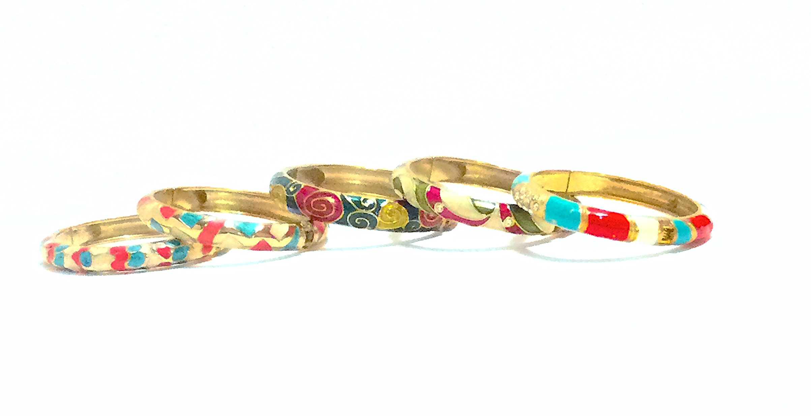
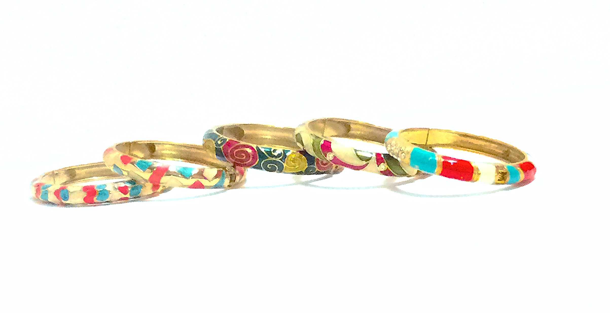

Portfolio Sections: Professional Certificates | Pink Candy Product Line | Artwork/Graphic Design | Homepage
This page showcases categories of Pink Candy product lines. There are different amounts and styles available for each category of items. These were selected with regards to cost/quality, estimated demand and the budget available at the time.
Pink Candy is a fashion boutique that hosts a variety of fashion items in an online format. The selection includes different types of items like clothing, bracelets, hair accessories, men’s silk ties, purses, trinkets, and more.
The inspiration for this start up company came about during my freshman year of college. There was a program that sponsored entrepreneurship and was looking for students to come up with ideas, make a business plan, and pitch their idea to see if they could receive seed or grant money. I was persuaded to try out, and was awarded a $500 seed grant. More funds ended up being donated to me by family members and I was able to pick an assortment of items during my trip to Asia. When I was back at school, I sold the $500 (or more) worth of items on campus and completed an end report for the competition/program.
While this fashion boutique is no longer active, domestically stored items can always be retrieved and international orders can be made for out of stock or different designs (there are very many different designs, styles and qualities). It was a great experience that taught me a lot about entrepreneurship, international business, business modeling, conceptualizations, operations, and processes.

The items below are just an example of the categories of products available.
 


The bags below come in different styles, sizes, and material compositions. They are hand beaded and each style uses a different pattern although the technique in general is similar.


A few different styles of clothing.


Silk Ties and Silk Bow Ties.


Pearls come in a variety of sizes, colors, styles, and designs.


Professional Certificates | Pink Candy Product Line | Artwork/Graphic Design | Homepage